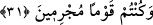

apaçık kurtuluş budur.
Bu ümmetlerden “İnanıp iyi işler yapanlar; Rableri onları rahmetine” cennetine
“sokar. İşte” Allah’ın rahmet ve cennetine sokma işi “apaçık kurtuluştur.” Bunun
ötesinde felah, başarı düşünülemez.
Bu ifâde, önceki âyetlerin îzahıdır. Çünkü girmek işi cennette hakikat, diğer
rahmetlerde mecâzdır. Bu bir şeye hulûl edip giren nesneyle isimlendirilmesi kabilinden
mecâzdır. Cennet Allah’ın rahmetinin mahalli olduğu için ona mecâzen rahmet
denilmiştir.
Fakîr (Bursevî) der ki: Esas büyük başarı, gönül cennetine girmek, hem dünyada, hem
âhirette Allah Teâlâ’ya kavuşmaktır. Fakat bu durum pek belirgin olmayıp halk ve avam
tarafından bilinmeyince halk nezdinde başarı, cennete girmek olunca “İşte apaçık
kurtuluş budur” denildi. Gerçi bu açık başarı olan cennete girme durumu, büyük başarı
olan gönül cennetini de kapsamaktadır. Zira cennet Allah’ın her çeşit rahmetini ihtivâ
eden bir mekandır.
31. Ama inkâr edenlere gelince onlara: Âyetlerim size okunmuş, siz de
büyüklenip suçlu bir toplum olmuştunuz, değil mi? denilir.
“Ama inkâr edenlere gelince” onlara da sitem ve başa kakma tarzında şöyle denir:
Benim elçilerim size geldi, “Âyetlerim size okunurdu, fakat siz” ona îmân etmekten
“büyüklük tasladınız ve suçlu bir toplum oldunuz değil mi?”
Şeyh Semerkandî Bahru’l-ulum’da şöyle demiştir: Şâyet sen “bu âyet, Rum, Türk ve
Hintlerin merkeze uzak en ücra ve mahrumiyet bölgelerinde yaşayan ve kendilerine
dâvet ulaşmayıp Allah’ın âyetlerinden hiçbir şey okunmamış olan ve sayıları çöldeki
kumlardan fazla olan bu insanlara da şâmil olur mu? Bunlar hakkında ne dersin?
dersen,” Ben derim ki; “bence, âyet bunları kapsamamaktadır. Bana göre zâhir olan bu
insanlar mâzur ve affa dahil olup Allah’ın geniş rahmeti onları kaplamıştır. Bilakis ben
bu âyetin fetret döneminde ölenleri, her ahmak ve sefih olanı, yaşlı ve bunakları, sağır
ve dilsizleri kapsar” derim.
Ebû Hureyre’den rivâyet edildiğine göre Peygamberimiz (s.a.) şöyle buyurmuştur:
“Dört sınıf insan vardır ki bunların hepsi Allah’a bir huccet ve özürle geleceklerdir.
Bunlar fetret devrinde ölenler, İslâm’a bunaklık devresinde yetişenler, sağır, dilsiz ve
ma’tûh olanlar, bir de ahmak ve sefih olanlardır.”[18]
Ey sual sahibi kardeşim! Allah’ın rahmetini geniş tut. Gönlünü hoş tut. Zira bizden
evvel bu şeriatın sâhibi rahmetini gâyet geniş tutmuş, kullarına hiçbir darlık ve zorluk
çıkarmamıştır.